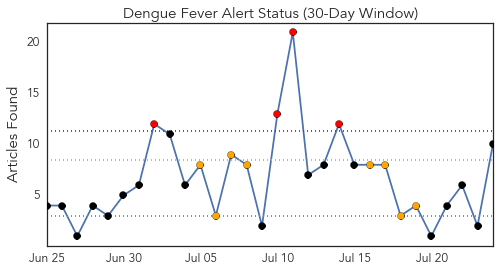
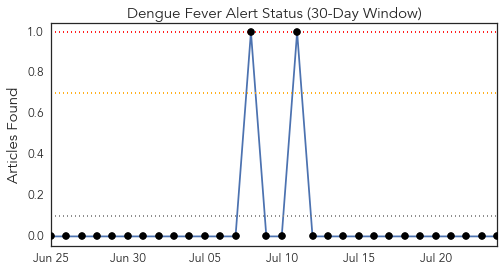
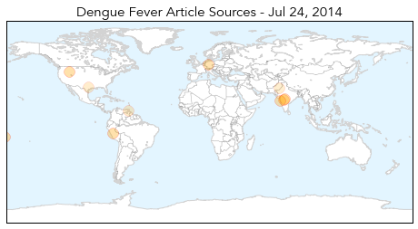
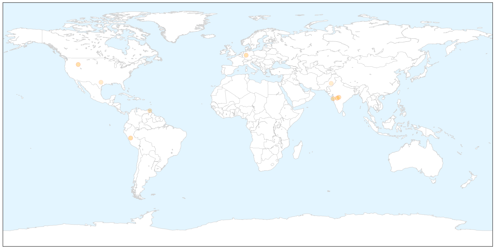
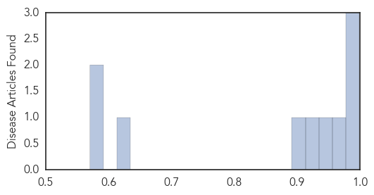

Dengue Fever
30-Day Web Trend
4 alerts, 2 warnings

30-Day Twitter Trend
2 alerts, 0 warnings

Article Locations

X

Article Confidences
Top Articles:
- 0.999
- Dengue, malaria cases may rise: Experts
- 0.992
- High Health Alert issued
- 0.988
- Keeping a check on mosquito breeding spots
- 0.976
- Visit to a friend's house spreads Dengue virus
- 0.944
- Erratic monsoon in Mumbai keep seasonal ailments in check
- 0.919
- India′s encephalitis outbreak: the key facts
- 0.904
- Anti-dengue drive picks up steam
- 0.629
- Cedros under attack from mosquitoes
- 0.587
- Child immigrants not posing a disease threat, Texas doctor tells Washington conference
- 0.571
- Depts concerned ordered to conduct dengue surveillance
Top Tweets:
-
No tweets found for Jul 24, 2014
Bubonic Plague
30-Day Web Trend
9 alerts, 0 warnings

30-Day Twitter Trend
0 alerts, 0 warnings

Article Locations

Article Confidences

Top Articles:
- 0.869
- China reopens town sealed after plague death
- 0.859
- China reopens town sealed after plague death
- 0.857
- China reopens Gansu town of 30,000 sealed after death from bubonic plague
- 0.831
- China reopens town sealed after plague death
- 0.802
- iafrica.com China reopens plague town
- 0.680
- China bubonic plague: Government quarantines 'plague' city
- 0.595
- Residents Of Chinese Town Face Quarantine After Man Dies Of Bubonic Plague
Top Tweets:
-
No tweets found for Jul 24, 2014